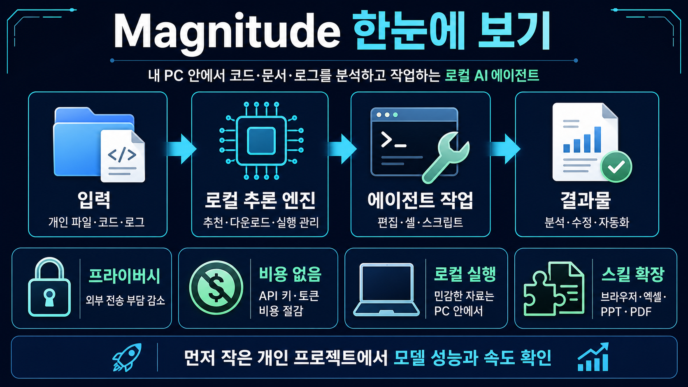

LOCAL AI AGENT · OPEN SOURCE
내 PC 안에서 굴리는
내 PC 안에서 굴리는
AI 작업 에이전트
Magnitude는 로컬 모델과 자체 추론 엔진을 묶어, 민감한 코드·문서·로그를 외부 API 없이 분석하고 편집하게 돕는 오픈소스 에이전트야
magnitudedev/magnitude 바로가기
Magnitude는 로컬 모델과 자체 추론 엔진을 묶어, 민감한 코드·문서·로그를 외부 API 없이 분석하고 편집하게 돕는 오픈소스 에이전트야
magnitudedev/magnitude 바로가기